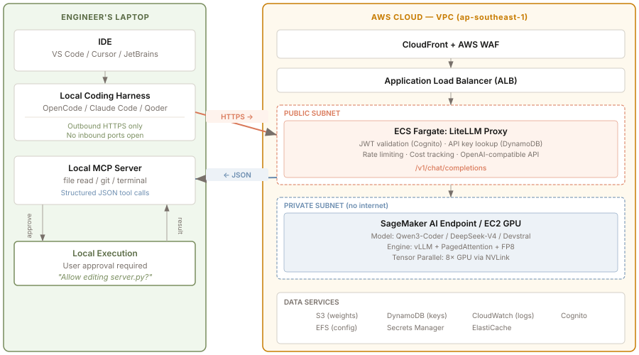
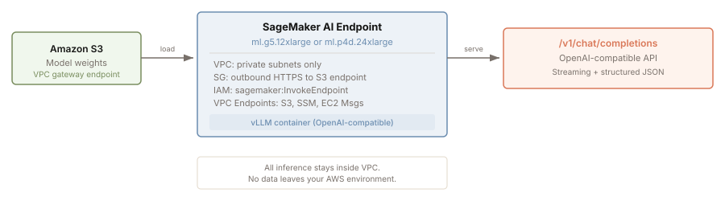
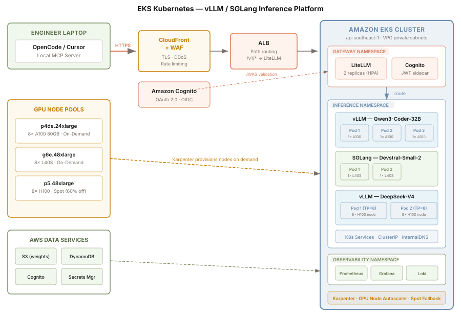
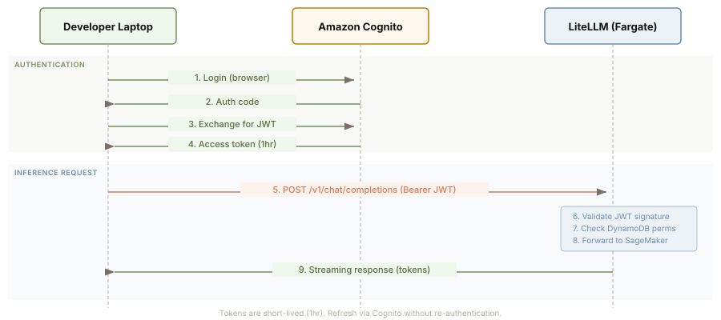
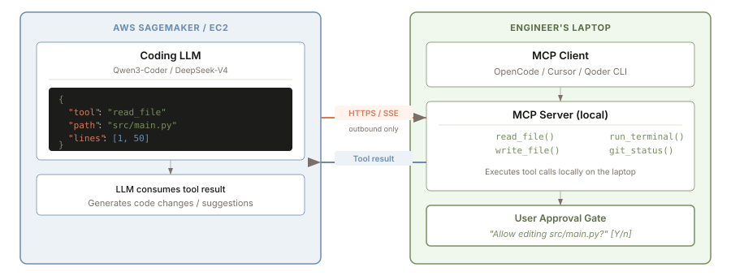
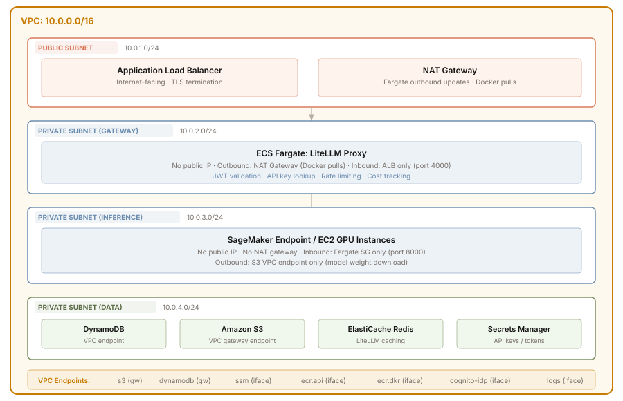

A reference architecture for building a self-hosted AI coding platform on AWS — covering inference infrastructure, AI gateway, the Model Context Protocol bridge, hybrid local-cloud execution, and security-first design. This is not a generic LLM deployment guide; it is an infrastructure blueprint for a coding platform that serves developer teams.
A self-hosted LLM coding platform is fundamentally different from a chatbot or text-generation service. Coding tools like OpenCode, Claude Code, and Cursor need to read files, run terminal commands, and test code locally. The cloud-hosted LLM must never have direct SSH or remote-code-execution access to an engineer’s laptop.
The correct architecture is hybrid: the cloud handles heavy AI inference, while the local PC controls safe execution of code and file operations. The local tool sends code context up to AWS and pulls down structured AI instructions to execute locally.
A production self-hosted coding platform has three distinct pillars, each solving a different problem:
Where model weights run and tokens are generated.
Authentication, routing, rate limiting, and observability.
Standardized bridge between cloud LLM and local tools.
The complete data flow from engineer laptop to model inference and back:

The inference core is where model weights run. Two deployment options exist on AWS, each with different tradeoffs:
Inference Deployment Decision
Need managed endpoint with auto-scaling + VPC integration?
|-> YES -> Amazon SageMaker AI (managed, serverless GPU)
| Pros: auto-scaling, managed infra, VPC-native, JumpStart model catalog
| Cons: higher per-hour cost, less control over serving stack
|
|-> NO -> Need full control over serving engine + custom kernels?
|-> YES -> EC2 (p4de / p5) + vLLM (bare metal GPU)
| Pros: full control, custom quantization, lowest latency
| Cons: self-managed, need ECS/EKS orchestration
|
|-> NO -> SageMaker (default choice for most teams)
SageMaker provides a managed inference endpoint with built-in VPC integration, auto-scaling, and model catalog via JumpStart. This is the recommended path for teams that want production reliability without managing GPU infrastructure.

For teams needing full control over the serving stack — custom kernels, specific quantization formats, or the lowest possible latency — EC2 GPU instances with vLLM or SGLang provide bare-metal access.
For teams running multiple models, needing autoscaling, rolling deploys, and proper orchestration — Amazon EKS with vLLM and SGLang is the production pattern. Kubernetes handles GPU scheduling via device plugins, autoscaling via Karpenter, and model routing via K8s Services.
Why EKS over raw EC2: raw EC2 requires manual process management, no autoscaling, no health checks, no rolling deploys. EKS gives you declarative infrastructure, GPU node autoscaling (including Spot fallback), and the ability to run vLLM and SGLang side by side with different scaling policies per model.

/v1/chat/completions API--tensor-parallel-size N| Instance | GPU | GPUs | VRAM / GPU | Total VRAM | vCPU / RAM | Network | OD Price |
|---|---|---|---|---|---|---|---|
| p5.48xlarge | H100 SXM5 | 8 | 80 GB | 640 GB | 192 / 2 TB | 3200 Gbps (EFA) | ~$130/hr |
| p5en.48xlarge | H200 SXM | 8 | 141 GB | 1,128 GB | 192 / 2 TB | 3200 Gbps (EFA) | ~$160/hr |
| p4de.24xlarge | A100 80GB | 8 | 80 GB | 640 GB | 96 / 1.1 TB | 400 Gbps (EFA) | ~$48/hr |
| g6e.48xlarge | L40S | 8 | 48 GB | 384 GB | 192 / 768 GB | 50 Gbps | ~$16/hr |
| g6.12xlarge | L4 | 4 | 24 GB | 96 GB | 48 / 192 GB | 25 Gbps | ~$5/hr |
| g5.12xlarge | A10G | 4 | 24 GB | 96 GB | 48 / 192 GB | 25 Gbps | ~$6/hr |
| Model | Precision | VRAM Needed | AWS Instance | Est. Cost/mo (OD) | Coding Use Case |
|---|---|---|---|---|---|
| Qwen3-Coder-480B-A35B (MoE) | FP8 | ~490 GB | p5.48xlarge (8×H100) | ~$93,600 | Best quality — closest to Opus 4.6 on agentic coding; 35B active params |
| DeepSeek-V4-Pro (MoE) | FP8 | ~1.6 TB | 2× p5.48xlarge (PP=2) | ~$187,200 | 1M context; 49B active params; strongest open-weight reasoning |
| Kimi-K2.7-Code (MoE) | FP8 | ~1 TB | 2× p5.48xlarge (PP=2) | ~$187,200 | 32B active; strong agentic coding; 256K context |
| Qwen3-Coder-32B | FP8 | ~36 GB | g6e.48xlarge (8×L40S) | ~$11,500 | Cost-efficient daily coding; ~15–25% below Opus 4.6 on complex tasks |
| Qwen3-Coder-7B | FP16 | ~16 GB | g6.12xlarge (4×L4) | ~$3,600 | Low-latency inline completions; autocomplete only |
| DeepSeek-Coder-V3 (671B MoE) | FP8 | ~680 GB | p5.48xlarge (8×H100) | ~$93,600 | 160K context; deep workspace analysis |
| Qwen3-235B-A22B (MoE) | INT4 | ~142 GB | p4de.24xlarge (8×A100) | ~$34,500 | Mid-tier quality; 22B active params; good cost/quality balance |
The AI gateway sits between engineer laptops and the inference core. It handles authentication, rate limiting, cost tracking, and API format translation. This is the control plane of your coding platform.
LiteLLM runs as a containerized proxy on ECS Fargate. It exposes an OpenAI-compatible /v1/chat/completions endpoint and translates between different API formats (OpenAI, Anthropic, Azure). Multiple model backends can be load-balanced behind a single gateway.
Every request from a coding harness must carry a valid OAuth 2.0 token. Amazon Cognito issues short-lived JWT tokens that the LiteLLM proxy validates before forwarding to the inference endpoint. This replaces fragile API-key-in-env-file patterns with corporate identity.

The Model Context Protocol (MCP) is the standardized bridge between your AWS-hosted LLM and local developer tools. Handed over to the Linux Foundation, MCP has become the gold standard for connecting remote LLMs to local execution environments.
Without MCP, every coding tool would need a custom API integration. With MCP, the LLM can request file context, repository maps, or local execution through a standardized protocol — the local harness securely processes each request.

AWS provides official blueprints for deploying MCP servers within your VPC. These servers run on ECS Fargate or Lambda, authenticated via Cognito OAuth, and protected by WAF. They allow your cloud-hosted LLM to securely interact with external tools and data sources.
| MCP Server Type | Deployment | Purpose | AWS Services |
|---|---|---|---|
| Documentation MCP | ECS Fargate | Search internal docs, wikis, Confluence | Fargate, OpenSearch, Cognito |
| Database MCP | Lambda | Query databases safely (read-only) | Lambda, RDS, Secrets Manager |
| Git MCP | ECS Fargate | Repository operations, PR management | Fargate, CodeCommit/GitHub |
| CI/CD MCP | Lambda | Trigger builds, check pipeline status | Lambda, CodePipeline, CodeBuild |
Three connectivity patterns exist, each with different security and complexity tradeoffs:
Connectivity Decision
Public internet with TLS + OAuth?
|-> YES -> Pattern A: Public ALB + Cognito (simplest)
| CloudFront + WAF + ALB in public subnet
| Cognito OAuth for auth; no VPN needed
| Best for: distributed teams, contractors
|
|-> NO -> Corporate VPN or Direct Connect available?
|-> YES -> Pattern B: VPN + Private ALB (enterprise)
| ALB in private subnet; reachable only via VPN
| No public internet exposure
| Best for: regulated industries, finance
|
|-> NO -> Pattern C: SSM Port Forwarding (zero-trust)
AWS Systems Manager tunnels to Fargate task
No public endpoints at all
Best for: maximum security, air-gapped feel
The simplest and most common pattern. CloudFront terminates TLS, WAF blocks common attacks, ALB routes to ECS Fargate, and Cognito validates every request. No VPN required — engineers connect from anywhere with internet access.
For maximum security, use AWS Systems Manager Session Manager to create a tunnel from the engineer’s laptop directly to the Fargate task’s private IP. No public endpoints exist — the inference platform is completely invisible to the internet.
Security is not an afterthought — it is the primary design constraint for a self-hosted coding platform. Corporate source code is among the most sensitive assets a company has. The architecture must prevent code leakage, unauthorized access, and prompt injection.
| Threat | Mitigation | AWS Implementation |
|---|---|---|
| Code leakage via LLM | VPC isolation; no outbound internet from inference subnet; disable logging of prompts/responses | SageMaker in private subnet with no NAT gateway; CloudWatch log redaction |
| Unauthorized access | OAuth 2.0 with short-lived tokens; per-user API key quotas; MFA required | Cognito + DynamoDB session management; IAM policies scoped to sagemaker:InvokeEndpoint |
| Prompt injection | Input validation at gateway; block secrets (AWS keys, passwords) from entering prompts | Custom LiteLLM middleware or Bedrock Guardrails to scan and redact sensitive patterns |
| Network exposure | No inbound ports on engineer laptops; outbound-only HTTPS to ALB | Security groups: allow outbound 443 only; no inbound rules on client machines |
| Model weight theft | S3 bucket policies; VPC endpoints for S3; no public internet access to weight storage | S3 gateway endpoint in VPC; bucket policy restricting access to VPC endpoint only |
| Lateral movement | Micro-segmentation; each pillar in its own subnet with strict security groups | Separate subnets for gateway, inference, and storage; security groups reference other SGs, not CIDRs |

The inference engine loads model weights, manages GPU memory, and serves tokens. For a coding platform, the engine must support long contexts (32K+ tokens), structured output (JSON tool calls), and streaming responses.
| Engine | Setup | Throughput | OpenAI API | TP / PP | Best For |
|---|---|---|---|---|---|
| vLLM | <2 min | High | Built-in | TP + PP | Production default. Widest model support. Start here. |
| SGLang | <2 min | High | Built-in | TP + PP | Agentic workloads; structured outputs; 29% faster with repeated context (RadixAttention prefix caching). |
| TensorRT-LLM | 1–2 weeks | Highest | Via wrapper | TP + PP | NVIDIA-only, max throughput. 15–30% faster than vLLM on H100. Worth the compile overhead at scale. |
| LMDeploy | Fast | High | Built-in | TP | Strong for Qwen/InternLM models. Up to 1.8× vLLM in specific configs. |
| Format | Bytes/Param | 70B VRAM | Quality vs FP16 | Hardware | When to Use |
|---|---|---|---|---|---|
| BF16 | 2.0 | ~140 GB | Baseline | Any GPU | Compliance, medical, legal. When quality cannot be risked. |
| FP8 | 1.0 | ~70 GB | 98–99.5% | H100+ native | Production default on Hopper. Near-lossless. 1.4–1.8× throughput. |
| INT4 (AWQ) | 0.5 | ~35 GB | 97–99% | Any GPU | Production 4-bit. Fastest INT4 kernels (Marlin). Best VRAM savings. |
| INT4 (GPTQ) | 0.5 | ~35 GB | 95–98% | Any GPU | Fallback when AWQ weights unavailable. |
Deployment Decision Tree
Model fits in one GPU?
|-> YES -> Single GPU (simplest, lowest cost)
|
|-> NO -> Model fits across GPUs in one node (NVLink)?
|-> YES -> Tensor Parallel (split layers across GPUs)
|
|-> NO -> High concurrent traffic?
|-> YES -> Disaggregated Prefill/Decode
|
|-> NO -> Pipeline Parallel (split layers across nodes)
All model layers on one GPU. Simplest setup.
Split each layer across N GPUs. All GPUs process every token.
--tensor-parallel-size 4|8Different GPUs handle different layers sequentially.
--pipeline-parallel-size N + RaySeparate prefill (compute-heavy) from decode (memory-heavy).
GPU hours are the dominant cost. Three strategies to reduce your bill:
60–70% cheaper than on-demand
30–40% cheaper for 1-year commitment
Drop GPU tier entirely
| Component | AWS Service | Instance / Config | Monthly Cost (OD) |
|---|---|---|---|
| Inference (quality) | EC2 | p5.48xlarge (8×H100) — Qwen3-Coder-480B FP8 | ~$93,600 |
| AI Gateway | ECS Fargate | 2 vCPU / 4 GB RAM — LiteLLM proxy | ~$100 |
| Auth | Cognito | MAU-based pricing (free tier: 50K MAU) | ~$0 |
| Storage | S3 + EFS | ~500 GB model weights + config | ~$25 |
| Networking | ALB + NAT + VPC Endpoints | ALB hours + data processing | ~$150 |
| Monitoring | CloudWatch | Logs + metrics + alarms | ~$100 |
| Total (on-demand) | ~$94,000/mo | ||
| Total (1-year RI, ~35% discount on compute) | ~$61,100/mo | ||
| Component | AWS Service | Instance / Config | Monthly Cost (OD) |
|---|---|---|---|
| Inference (daily coding) | EC2 | g6e.48xlarge (8×L40S) — Qwen3-Coder-32B FP8 | ~$11,500 |
| AI Gateway | ECS Fargate | 1 vCPU / 2 GB RAM — LiteLLM proxy | ~$50 |
| Auth | Cognito | MAU-based pricing (free tier: 50K MAU) | ~$0 |
| Storage | S3 + EFS | ~200 GB model weights + config | ~$10 |
| Networking | ALB + NAT + VPC Endpoints | ALB hours + data processing | ~$100 |
| Monitoring | CloudWatch | Logs + metrics + alarms | ~$50 |
| Total (on-demand) | ~$11,710/mo | ||
| Total (1-year RI, ~35% discount on compute) | ~$7,800/mo | ||
| Metric | What it tells you | Alert threshold |
|---|---|---|
| GPU utilisation % | Whether you’re over- or under-provisioned | <30% = scale down; >90% = scale up |
| Token throughput (tok/s) | Aggregate output rate across all requests | Baseline per model + alert on 20%+ drop |
| TTFT p50/p99 | Time to first token — user-perceived latency | p99 > 5s for interactive coding; > 30s for batch |
| Queue depth | Requests waiting for a GPU slot | Sustained > 10 = need more replicas |
| KV cache utilisation | How full is your GPU memory cache | >85% = risk of OOM; reduce max-model-len |
| Cost per 1M tokens | Effective unit economics | Compare against Claude/GPT API pricing |
| Auth failures / 401s | Security events or misconfigured clients | >5/min from single IP = investigate |
The following resources provide complete, production-tested implementations of the patterns described above:
| Resource | Focus | Key Takeaway |
|---|---|---|
| DoIT: Hosting LLM on SageMaker for AI-Assisted Coding | SageMaker + ECS Fargate + LiteLLM | Complete walkthrough: SageMaker endpoint behind ECS Fargate proxy, SSM port forwarding to local IDE, VPC endpoint configuration |
| AWS: Deploying MCP Servers on AWS | MCP + Cognito OAuth + CDK | Official AWS CDK implementation: Cognito OAuth flow, DynamoDB session management, ECS Fargate hosting, WAF protection |
| AppStack: Self-Hosted LLM API with CDK | CDK + DynamoDB + ECS Fargate | Infrastructure-as-code: DynamoDB for API keys, Fargate for app layer, Route53 for DNS, complete CDK stack |
| AWS: Extend SageMaker LLMs with MCP | SageMaker + MCP tool execution | How to wire MCP servers to SageMaker endpoints so the LLM can safely invoke tools within your VPC |
| OpenCode + AWS MCP Servers | Local harness + cloud LLM | End-to-end integration: configuring OpenCode to use AWS-hosted LLM with local MCP servers for file/git operations |
| AWS: Hosting Coding Agents on Bedrock AgentCore | Agent workspaces in VPC | Platform team pattern: secure coding agent workspace inside VPC, corporate identity integration, agent lifecycle management |